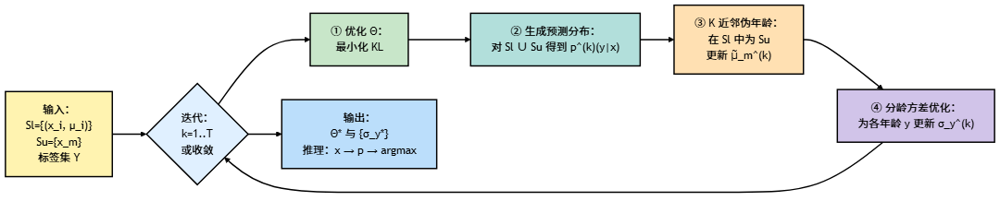

精读解析｜基于伪年龄的半监督：再次突破标签分布学习的能力边界
本文精读 Geng 等《Semi-Supervised Adaptive Label Distribution Learning for Facial Age Estimation》(2017)，在回顾 LDL/ALDL 的前提下，用统一记号梳理 SALDL 的最小闭环流程（条件分布预测 → 伪年龄 KNN → 分龄 σ 自适应），明确“所有样本基于当前模型预测分布”的伪年龄估计，整理 MORPH 的实验协议与对比结果。
论文链接：Semi-Supervised Adaptive Label Distribution Learning for Facial Age Estimation
本文前置文章链接：
在标注稀缺的年龄估计中，标签分布学习（LDL）以邻近年龄的软赋权有效抑制方差与过拟合。自适应 LDL（ALDL）进一步按年龄学习方差 σ，但遇到未标注样本只能舍弃，造成信息浪费。为发挥 LDL 的“近邻影响”并结合半监督，使未标注样本在分布层面受约束参与训练，提出 SALDL：将未标注样本与分龄自适应 σ 的交替优化耦合，在低标注条件下获得更稳健的估计。
半监督自适应标签分布学习（SALDL）
设有标注样本集合 \(S_l=\{(x_i,\mu_i)\}\)，未标注样本集合 \(S_u=\{x_m\}\)，年龄标签空间 \(\mathcal{Y}=\{y_1,\dots,y_L\}\)。SALDL 在每一轮迭代中，将“条件分布预测—伪年龄估计—分龄 \(\,\sigma\,\) 自适应”串联成闭环；其中 \(\,\Theta\,\) 与 \(\{\sigma_y\}\) 的优化沿用你在 ALDL 文中已介绍的 KL 最小化与交替策略，这里仅精炼流程并细化未标注样本的伪年龄估计。
（1）条件分布预测。 以当前参数 \(\Theta^{(k)}\) 对所有样本（含 \(S_l\) 与 \(S_u\)）计算预测标签分布： \[ p^{(k)}(y\mid x)=\frac{\exp\!\big(\theta_y^{(k)\top} x\big)}{\sum_{y'\in\mathcal{Y}}\exp\!\big(\theta_{y'}^{(k)\top} x\big)}. \] 对 \(S_l\) 的样本，该预测分布用于与其目标分布做 KL 最小化以更新 \(\Theta\)；对 \(S_u\) 的样本，该预测分布将作为后续伪年龄估计的分布依据（见下一段）。
（2）伪年龄估计（未标注样本）。 对每个 \(x_m\in S_u\)，在 \(S_l\) 中基于特征与预测分布的复合距离选取 \(K\) 个近邻，距离为： \[ \lambda(x_m,x_n)=\lVert x_m-x_n\rVert_2^2\;+\;\alpha\,\mathrm{KL}\!\Big(p^{(k)}(\cdot\mid x_m)\,\Big\|\,p^{(k)}(\cdot\mid x_n)\Big),\quad x_n\in S_l. \] 其中 \(x_m\in S_u\)、\(x_n\in S_l\)，\(p^{(k)}(y\mid x)\) 为第 \(k\) 轮模型的预测标签分布，\(\mathrm{KL}(\cdot\|\cdot)\) 为 Kullback–Leibler 散度，\(\alpha>0\) 为平衡特征距离与分布差异的权重超参数。
记近邻集合为 \(\mathcal{N}(x_m)\)，其真实年龄为 \(\{\mu_n: x_n\in\mathcal{N}(x_m)\}\)。令 \[ \tilde{\mu}_m^{(k)}=\frac{1}{K}\sum_{x_n\in\mathcal{N}(x_m)}\mu_n \] 作为 \(x_m\) 的伪年龄，并据此构造其目标标签分布（采用分龄方差 \(\sigma_y^{(k)}\) 的离散高斯）： \[ d_m^{(k)}(y)\propto \exp\!\left(-\frac{(y-\tilde{\mu}_m^{(k)})^2}{2(\sigma_y^{(k)})^2}\right),\quad y\in\mathcal{Y}. \] 伪年龄估计阶段用到的分布信息，全部来自现有模型对每个样本产出的预测标签分布 \(p^{(k)}(\cdot\mid x)\)，未标注样本无需先验年龄或初始化目标分布。
（3）分龄 \(\,\sigma\,\) 自适应与目标分布重构。 以点估年龄 \(\hat{\mu}(x)=\arg\max_{y\in\mathcal{Y}} p^{(k)}(y\mid x)\) 与参考年龄 \(\mu_{\text{ref}}(x)\)（标注样本取 \(\mu_i\)，未标注样本取 \(\tilde{\mu}_m^{(k)}\)）计算误差 \(e(x)=\lvert \hat{\mu}(x)-\mu_{\text{ref}}(x)\rvert\)，选取 \(e(x)\) 低于当前 MAE 的样本作为“可信集”，并按年龄 \(y\) 聚合；随后对每个 \(y\) 解一维约束优化以获得新的分龄方差 \(\sigma_y^{(k+1)}\)，使对应高斯目标分布与可信集中样本的预测分布之间的 KL 总和最小。最后，使用 \(\{\sigma_y^{(k+1)}\}\) 分别结合真实年龄 \(\mu_i\)（对 \(S_l\)）或伪年龄 \(\tilde{\mu}_m^{(k)}\)（对 \(S_u\)）重构全体样本的目标分布，并进入下一轮 \(\Theta\) 的 KL 最小化。
符号对照。
- \(x\in\mathbb{R}^d\)：图像的数值特征向量；\(\mu\)：真实年龄；\(\tilde{\mu}\)：伪年龄；\(\hat{\mu}\)：由预测分布取 \(\arg\max\) 的点估年龄。
- \(\mathcal{Y}\)：离散年龄集合；\(d(y\mid\cdot,\sigma_y)\)：以年龄为均值、分龄方差为
\(\sigma_y\) 的离散高斯标签分布；\(Z\)：归一化常数。
- \(p^{(k)}(y\mid x)\)：第 \(k\) 轮模型对样本 \(x\) 的预测标签分布；\(\Theta^{(k)}\)：对应参数；\(\theta_y^{(k)}\)：类条件权重向量。
- \(\lambda(\cdot,\cdot)\)：复合距离；\(\mathrm{KL}(\cdot\|\cdot)\)：Kullback–Leibler
散度；\(K\)：近邻数；\(\alpha>0\)：权衡特征距离与分布差异的超参数。
- \(\sigma_y\)：年龄 \(y\)
的方差（分龄自适应）；MAE：当前轮的平均绝对误差阈值，用于筛选可信样本。
具体算法流程如下图所示。

实验与结果分析
实验设置遵循年龄估计的通用协议：在 MORPH 数据上提取 BIF 特征并经 MFA 降维，固定一套独立测试集，训练端在总样本数近似不变的前提下通过控制标注比例来模拟“标注稀缺”情形；半监督方法（SLDL、SALDL）在每个标注规模下都额外使用未标注样本。对比基线包含 KPLS、OHRank、LDL、ALDL 与图传播（LP），评估指标为 MAE。超参数采用交叉验证选取，典型地取初始化方差 \(\sigma_0=3\)、近邻数 \(K=10\)、复合距离权重 \(\alpha=10^{-3}\)，最大迭代轮次随标注量增大而适度减少；推理时以 \(y^*=\arg\max_y p(y\mid x;\Theta^*)\) 给出点估年龄。
结果显示，在标注量较低（例如 \(\leq 10^3\)）时，SALDL 在 MAE 上稳定优于所有基线，优势来源于两点：其一，利用预测分布与特征的复合距离为未标注样本估计伪年龄，使未标注数据转换为有效监督；其二，分龄方差的自适应在“可信样本”上最小化目标分布与预测分布的 KL，从而使目标标签分布更贴合不同年龄段的变化速率。对比上，SLDL 明显优于仅做自适应的 ALDL，说明半监督带来的增益；SALDL 进一步优于 SLDL，表明半监督与自适应的交替优化具有叠加效应。当标注量充足时，方法间差距收敛，且 SALDL 在“全部标注”的极限情形下退化为 ALDL；在未标注与标注来源存在性别/族裔分布差异时，随着未标注数量增加，误差仍继续下降，反映出伪年龄估计与自适应过程对分布偏移具有一定鲁棒性。